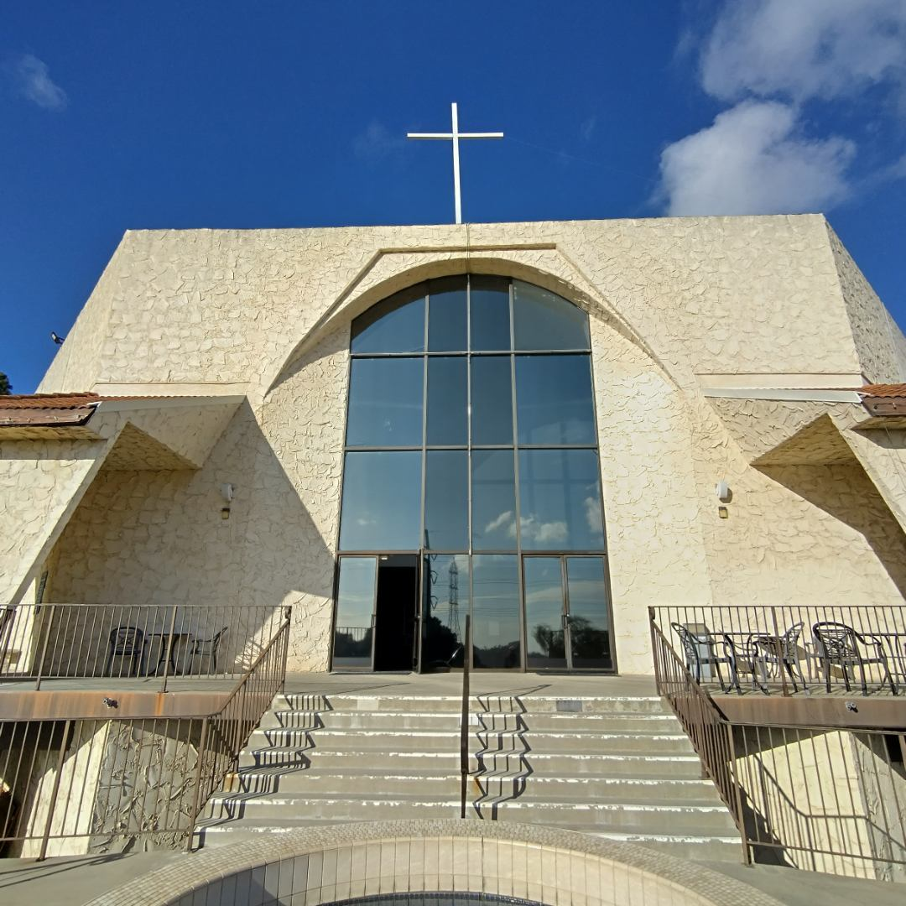
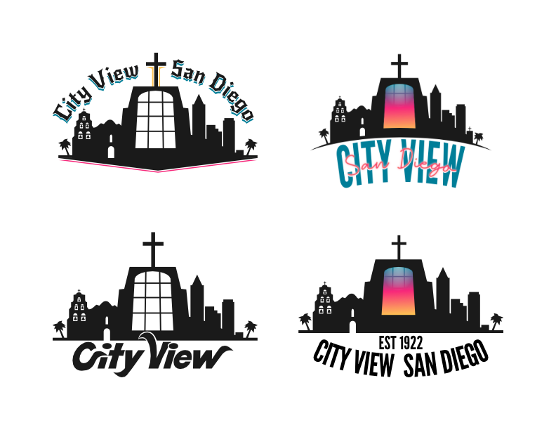
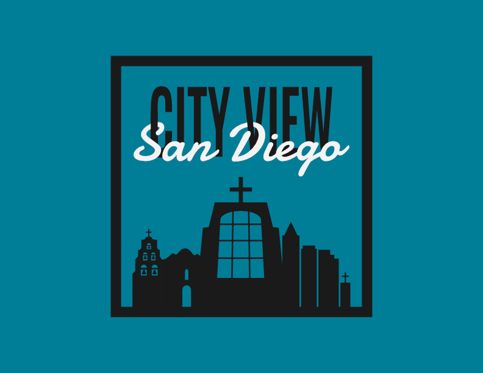

City View is a church with over a hundred years of ministry in San Diego. The goal with this logo was to capture that history while paying homage to the church's previous, long standing logo concept.
Christianity and City View have long histories in San Diego, and to capture this the historic "Mission San Diego de Alcalá" and the facade of City View were looked to for inspiration.

The first task was the development of the skyline silhouette for the logo. City View has been represented by a silhouette for years, and this aspect of the logo was a priority to preserve. Once this was done, a variety of concepts were explored.

The final version of the logo combined the best elements of each rendition, and added a new element: the postage stamp border. This brought the whole logo together and made it a piece to frame on the wall.
